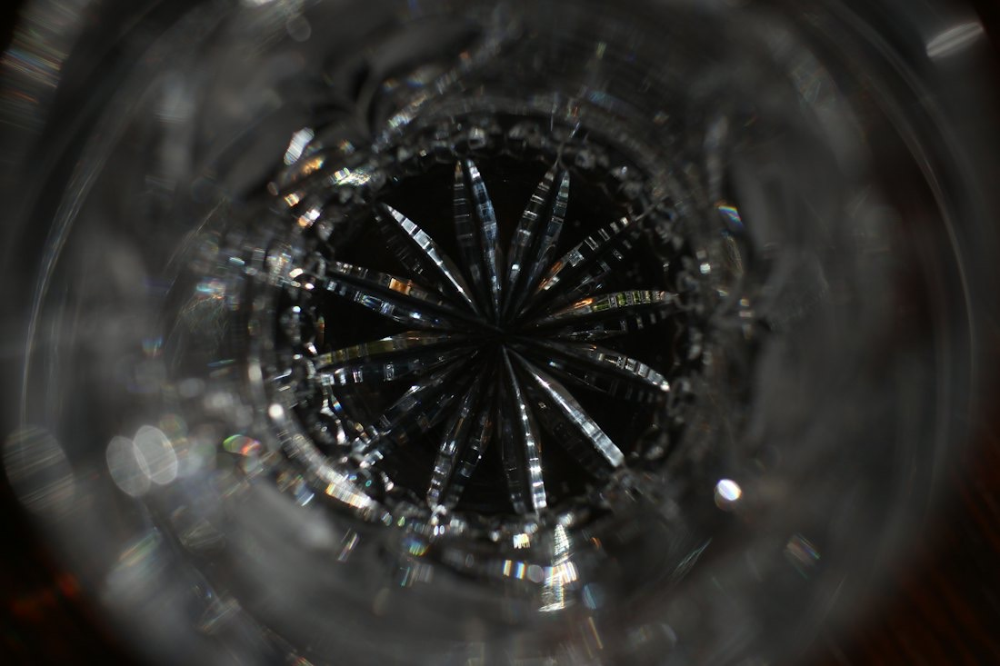
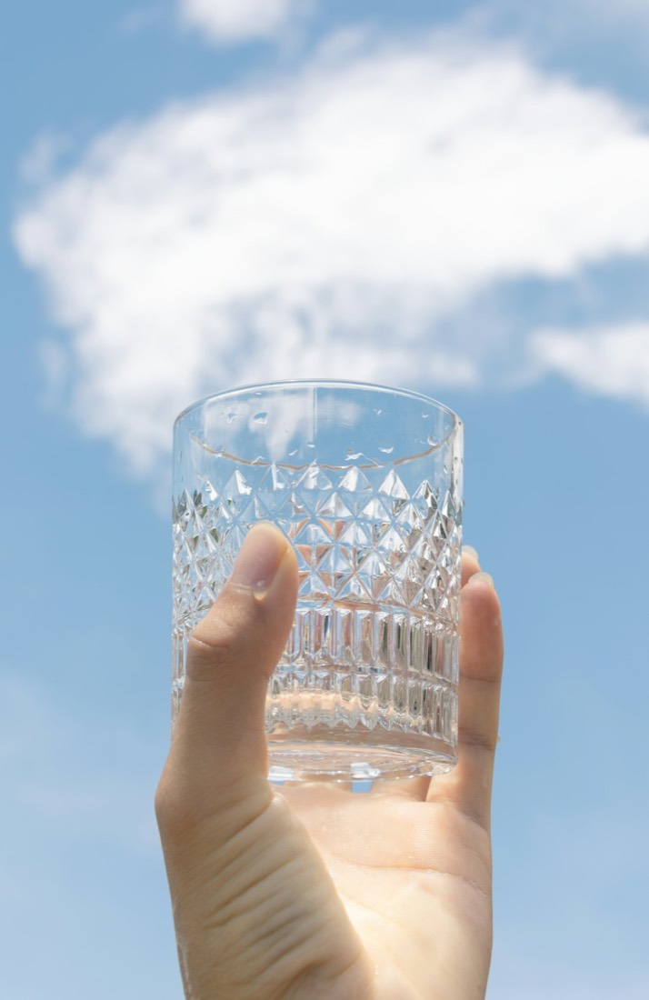
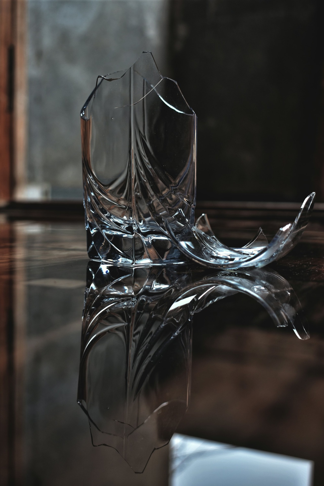

ぐい呑み
六華など。木箱入りで、贈り物にも。
江戸切子専門店 東京都江東区猿江
伝統工芸士・清秀の江戸切子専門店です。ぐい呑み、タンブラー、ロックグラスから、切子のアクセサリーまで。ショップに併設した工房で、切子体験もできます。
江戸切子専門店 東京都江東区猿江
伝統工芸士・清秀の江戸切子専門店です。ぐい呑み、タンブラー、ロックグラスから、切子のアクセサリーまで。ショップに併設した工房で、切子体験もできます。
江戸切子の紋様
矢来
カットの深さや滑らかさ。飲みながらも、ついグラスを触っていたくなる手触りです。
江戸切子の3Dイメージです。実際の品物とは異なります
手作業で仕上げた品は高価になってしまいましたが、手間の価値を分かったうえで気に入ったグラスでお酒を楽しむと、いつもの料理やお酒がいっそう美味しく味わえます。その思いで製作しています。
江戸切子は紋様に目が行きがちですが、実はもう一つの楽しみは手触り。カットの深さや滑らかさ、飲みながらもグラスを触っていたくなる、五感で楽しめるグラスです。

六華など。木箱入りで、贈り物にも。
矢来、縦細市松、八角籠目。

現役の伝統工芸士が、直接指導します。

…
| 平日 | 11:00〜20:00 |
|---|---|
| 土曜 | 10:00〜20:00 |
| 日曜 | 10:00〜18:00 |
| 定休日 | 木曜日 |
体験のご予約・ご質問は、お電話・メールで。